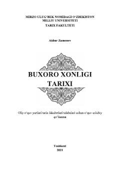

BXBuxoro xonligining XVI-XVIII asrlardagi siyosiy va ijtimoiy-iqtisodiy tarixiga bag'ishlangan o'quv qo'llanma.
Mazkur o'quv-uslubiy qo'llanma O'rta Osiyo tarixining XVI-XVIII asr o'rtalarigacha bo'lgan davrini, jumladan Buxoro xonligining siyosiy, ijtimoiy-iqtisodiy va madaniy hayotini yoritadi. Kitobda shayboniylar va ashtarxoniylar sulolalari hukmronligi, davlat boshqaruvi hamda tashqi siyosat masalalari ilmiy manbalar asosida tahlil qilingan. Asar oliy o'quv yurtlari tarix fakultetlari talabalari va tadqiqotchilar uchun mo'ljallangan.